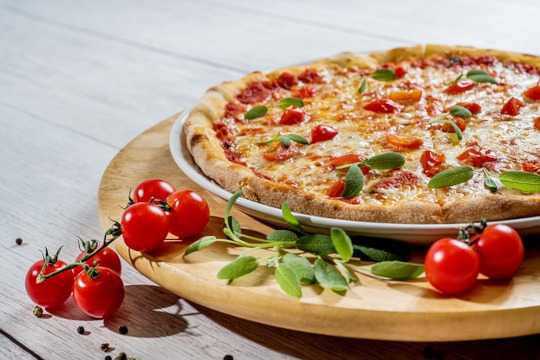

Home
Pizza

Description
Pizza is pure joy in a slice—crispy crust, tangy tomato sauce, gooey melted cheese, and all your favorite toppings baked to perfection. Whether you love pepperoni, veggies, or just plain cheese, pizza is endlessly customizable and always a crowd favorite.
From late-night cravings to family gatherings, pizza delivers big flavor with minimal fuss. Fold it, stack it, or eat it with a fork—there’s no wrong way to enjoy this iconic dish.
Ingredients
- 1 pizza dough (store-bought or homemade)
- 1/2 cup tomato sauce or marinara
- 1 1/2 cups shredded mozzarella cheese
- Your choice of toppings (pepperoni, mushrooms, bell peppers, olives, onions, etc.)
- 1 tablespoon olive oil
- Fresh basil leaves (optional)
- Salt and pepper to taste
Steps
- Preheat your oven to 475°F (245°C).
- Roll out the pizza dough on a floured surface to your desired thickness.
- Transfer the dough to a baking sheet or pizza stone and brush the crust with olive oil.
- Spread the tomato sauce evenly over the dough, leaving a small border for the crust.
- Sprinkle the shredded mozzarella cheese evenly over the sauce.
- Add your favorite toppings as desired.
- Bake in the preheated oven for 12-15 minutes, or until the crust is golden and cheese is bubbly.
- Remove from oven, garnish with fresh basil, slice, and serve hot.